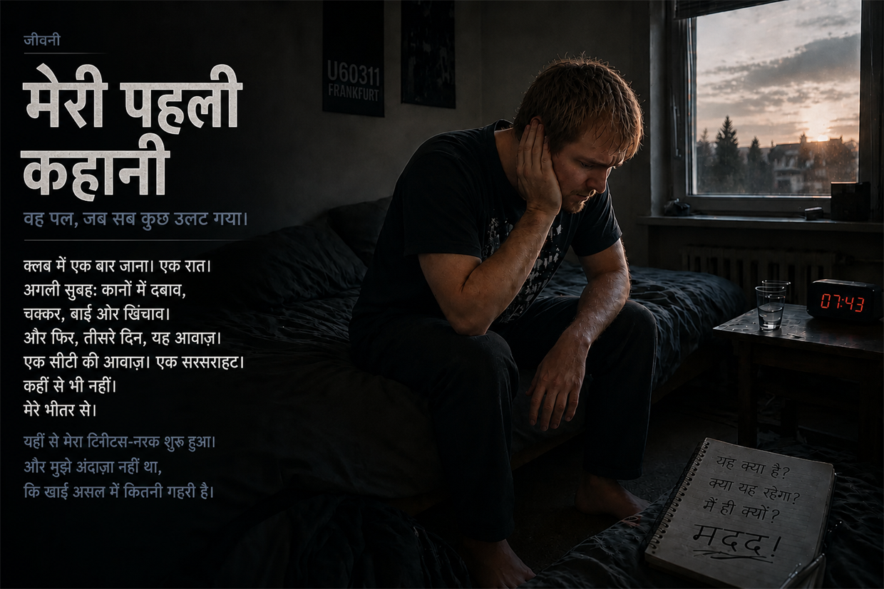
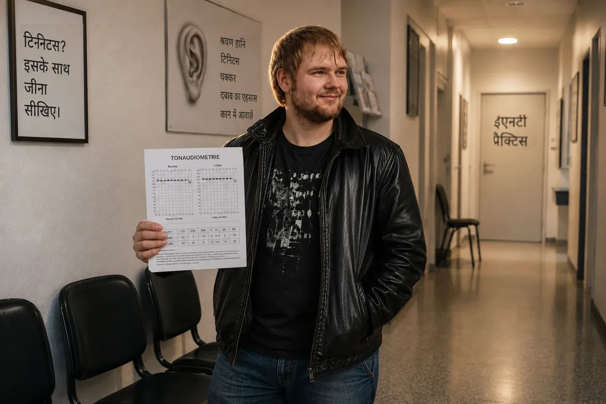

टिनिटस के नर्क से बाहर निकलने का मेरा रास्ता (संक्षिप्त संस्करण)
नमस्ते, मेरा नाम Dustin Müller है।
अगर आप अभी इस पृष्ठ पर पहुँचे हैं, तो शायद आप भी उसी नर्क में फँसे हैं जिसमें मैं उस समय था। जो लोग मेरे ठीक होने की 9,000 शब्दों वाली विस्तृत कहानी पढ़ना चाहते हैं, उनके लिए यहाँ पूरी जीवनी है।
बाकी सभी लोगों के लिए, जो जल्दी जवाब और कहानी की मुख्य कड़ी ढूँढ रहे हैं: यह उसका संक्षिप्त सार है कि मैंने उस समय फौलादी तर्क और बायोहैकिंग के सहारे अपने टिनिटस को 100% से 0% तक नीचे लाने के लिए कैसे लड़ाई लड़ी।
1. क्रैश (2011 की शरद ऋतु)
मैं 23 साल का था, बिल्कुल स्वस्थ, और सोचता था कि मेरा शरीर सब कुछ झेल लेगा। फ्रैंकफ़र्ट के एक टेक्नो क्लब (U60) में बास बॉक्स के ठीक सामने सिर्फ़ एक बार जाना मेरे सिस्टम का प्लग खींच देने के लिए काफ़ी था। अगली सुबह मैं शुरुआत में “सिर्फ़” बहुत तेज़ चक्कर, कानों में भरा-भरा-सा दबाव और बाईं ओर तेज़ खिंचाव के साथ जागा। मुझे लगा, मेरा शरीर इसे अपने-आप संभाल लेगा। लेकिन 3वें दिन असली राक्षस जाग उठा: अचानक बाएँ कान में वह नारकीय सीटी और सरसराहट थी — और दाएँ कान में हल्की बीप। मेरा सिस्टम पूरी तरह ढह चुका था।
2. सिस्टम की नाकामी (“इसके साथ जीना सीखिए”)
अपनी दहशत में मैं एक ईएनटी डॉक्टर से दूसरे ईएनटी डॉक्टर के पास दौड़ता रहा। तब मुझे मिले जवाब चेहरे पर तमाचे जैसे थे: मुझे बताया गया कि मेरी सुनने की क्षमता स्थायी रूप से क्षतिग्रस्त है और मुझे “इसके साथ जीना सीखना होगा”। मुझे तो यहाँ तक सलाह दी गई कि संगीत या “सफ़ेद शोर” से उस टोन को ढक दूँ (मास्किंग/TRT), और ज़रूरत पड़ने पर मुझे एंटीडिप्रेसेंट देने की पेशकश भी हुई। इस सलाह पर चलने और खुद को लगातार संगीत और शोर सुनाते रहने के बाद, दाएँ कान में पहले से मौजूद हल्का टोन कुछ ही दिनों बाद साफ़ तौर पर बहुत बिगड़ गया।
पीछे मुड़कर देखता हूँ तो यह “मास्किंग” मेरे लिए एक विनाशकारी सलाह थी, जो मुझे दूसरे, पूरी तरह ध्वस्त कर देने वाले क्रैश तक ले गई: डॉक्टरों पर आँख मूँदकर भरोसा करते हुए मैंने स्कूल जाते समय कार में तेज़ संगीत सुना, ताकि मेरा “ध्यान भटक जाए”। मेरी खाली कोशिकाओं के लिए यही आखिरी बूँद थी। स्कूल में अचानक भीषण ध्वनि-संवेदनशीलता (हाइपरएक्यूसिस) शुरू हो गई, मेरी नज़र ने कलाबाज़ी खाई (वर्टिगो-सॉल्टो) और कान में आयनों के वापस जमा होने के कारण मेरा संतुलन-अंग पूरी तरह भर गया (मॉर्बस मेनिएर के लक्षण)। मैं पूरी तरह अलग-थलग पड़ गया था और अब घर से निकल नहीं सकता था।
3. निर्णायक मोड़: “फैंटम ध्वनि” के विरुद्ध प्रमाण
इसके बाद एक टिनिटस विशेषज्ञ ने मुझे यह मनवाने की कोशिश की कि कुछ महीनों के बाद मेरा टिनिटस दिमाग़ में केवल एक “फैंटम ध्वनि” रह गया था। लेकिन इसका उल्टा प्रमाण मुझे संयोग से मिला: यूनिवर्सिटी अस्पताल में कान की नली की तीव्र सूजन के इलाज के दौरान एक डॉक्टर ने तेज़ आवाज़ करने वाले उपकरण से मेरे कानों का सक्शन किया। ठीक उसी सेकंड, इसी शोर-उत्तेजना पर मेरा टिनिटस शारीरिक रूप से और ठीक उसी बिंदु पर विस्फोट कर उठा!
मेरे लिए यह बर्फ़-सा ठंडा तर्क था: कोई मनोवैज्ञानिक फैंटम ध्वनि यांत्रिक शोर पर उसी क्षण प्रतिक्रिया नहीं करती। मेरा टिनिटस कोई स्थिर चीज़ नहीं था। खराब स्रोत अभी भी कान में ही बैठा था — और हर नए शोर के बोझ तले कोशिकाएँ मदद के लिए चीख रही थीं।
4. खामोशी का प्रोटोकॉल

क्योंकि मैं अस्पताल में था (एक असफल कोर्टिसोन थेरेपी के लिए), मेरे कान मोटी गॉज़ पट्टियों से कई दिनों तक बाहरी दुनिया से पूरी तरह अलग रहे। वहीं मैंने पहली बार टोन में सचमुच कमी महसूस की। मैंने इससे निष्कर्ष निकाला, “ध्यान बँटाने” वाली डॉक्टरों की हर सलाह को नज़रअंदाज़ किया और कई महीने लगभग पूरी खामोशी में बिताए। न संगीत, न हेडफ़ोन, न रोज़मर्रा का शोर। इससे मेरा टिनिटस लगभग 25% कम हुआ (महसूस के आधार पर, ज़ाहिर है — टिनिटस को पैमाने से तो नापा नहीं जाता)। लेकिन फिर ठीक होना पूरी तरह रुक गया। मेरा शरीर अटक गया था।
5. B12 की चिंगारी (बर्फ़-सा ठंडा तार्किक निष्कर्ष)
निर्णायक सफलता फिर परिवार में घटी एक घटना से मिली। मेरे पिता ने एक तंत्रिका रोग के कारण खुद को विटामिन B12 की ऊँची खुराक का इंजेक्शन लगाया और सचमुच खिल उठे।
तभी मेरे दिमाग़ में विश्लेषण का सिक्का खनका: मैं 15 साल की उम्र से शाकाहारी था और लंबे समय तक गंभीर क्रॉनिक गैस्ट्राइटिस (पेट की अंदरूनी परत की सूजन) से जूझ चुका था। (वैसे इस गैस्ट्राइटिस को मैंने कुछ ही समय पहले खनिज मिट्टी, प्रोबायोटिक्स और इसबगोल की भूसी से हरा दिया था — यह पहला प्रमाण था कि डॉक्टर गलत हो सकते हैं!) मांस-रहित भोजन और बीमार पेट का यह मेल B12 की भारी कमी के लिए एकदम सटीक रूपरेखा था।
इसी तर्क से प्रेरित होकर मैंने अपने पिता से अपनी मांसपेशी में एक इंजेक्शन लगवाया। महत्वपूर्ण: मैं साफ़ तौर पर सलाह देता हूँ कि डॉक्टर की निगरानी के बिना ऐसा बिल्कुल न करें। अगली सुबह मेरा टिनिटस बहुत ज़्यादा धीमा था (लगभग 40% सुधार)! मेरी समझ: ATP उत्पादन के लिए B12 मुख्य ईंधन है। शोर के कारण मेरी कोशिकाएँ अपना आखिरी ATP जला चुकी थीं। इंजेक्शन ने मेरी कोशिकाओं को ऊर्जा से भर दिया, “कोशिकीय इंजन” फिर चालू हो गया और रात में मेरा शरीर मरम्मत कर सका।
6. गायब निर्माण-सामग्री (कोशिका झिल्लियाँ और माइलिन)
B12 के बावजूद दिन बीतने के साथ मेरा टिनिटस बार-बार बिगड़ता था — वह फिर तेज़ हो जाता था। वजह? मेरी बैटरी तो चार्ज हो रही थी, लेकिन कोशिकाओं की भौतिक संरचना अब भी टूटी हुई थी।
एक और दर्दनाक संकट (पित्त-शूल) के दौरान मुझे संयोग से लेसिथिन ग्रैन्यूल्स का पता चला, जिसने उस शूल में मेरी मदद की। महत्वपूर्ण: पित्त की पथरी होने पर डॉक्टर की निगरानी ज़रूर लें — यह एक तीव्र स्थिति में मेरा बिल्कुल निजी अनुभव है, इलाज की सलाह नहीं। लेसिथिन पहली बार लेने के सिर्फ़ तीन दिन बाद मैं अचानक 60–65% सुधार पर था — शुरुआती स्थिति से मापा जाए तो!
इसके पीछे का जीवविज्ञान मुझे बेहद रोचक लगा: लेसिथिन (फॉस्फोलिपिड्स) न सिर्फ़ तंत्रिकाओं के आवरण (माइलिन आवरण) के लिए महत्वपूर्ण है, बल्कि हर एक कोशिका झिल्ली की मूलभूत निर्माण-सामग्री भी है। डिस्को में भारी ऑक्सीडेटिव शोर-स्ट्रेस के कारण मेरी ज़रूरत से ज़्यादा बोझ झेल रही श्रवण कोशिकाओं की दीवारें सचमुच भुरभुरी और पारगम्य हो गई थीं। उस समय के मेरे व्याख्या-मॉडल के अनुसार B12 ने ऊर्जा (ATP) दी और लेसिथिन ने कोशिकीय सीमेंट दिया, ताकि टूटी हुई हेयर सेल्स को भौतिक रूप से फिर सील किया जा सके और श्रवण तंत्रिका में माने गए ढीले संपर्क की मरम्मत हो सके।
7. “कार्पेट बॉम्बिंग” (100% की जीत)
अंतिम रुकावट को तोड़ने के लिए मैंने बिना किसी नरमी के ऑर्थोमॉलिक्यूलर “कार्पेट बॉम्बिंग” शुरू की। मैंने अपने शरीर को वह सब दिया जिसकी उसे कोशिकाओं की मरम्मत के लिए ज़रूरत थी:
- उस समय अब भी कमजोर पेट को बाइपास करने के लिए ऊँची खुराक वाले B विटामिन (B1, B2, B3, B5, B6, B9, B12)
- 30 ग्राम लेसिथिन
- अमीनो एसिड और 3 ग्राम बेहतरीन ओमेगा-3 तेल
- विटामिन C, खनिज पदार्थ (जिंक, मैग्नीशियम) और पोषक-तत्त्वों के सांद्रण (LaVita, Dr. Rath)
फ़ेड-आउट:

पोषक तत्वों की इस भारी आपूर्ति और खामोशी का सख़्ती से पालन करने से स्थिति का रुख़ आखिरकार निर्णायक रूप से बदल गया। सुबह टोन लगातार धीमा होता गया और शाम की गिरावटें छोटी होती गईं। फिर वह एक सुबह आई। मैं जागा, जाँचने के लिए मैंने इयरप्लग अपने कानों में गहराई तक दबाए और मेरा सामना पूर्ण, मुक्ति देने वाली मृत खामोशी से हुआ। डिमर का स्विच शून्य पर था।
उस समय के मेरे व्याख्या-मॉडल के अनुसार मेरे माइलिन आवरण की मरम्मत हो चुकी थी, मेरी श्रवण कोशिकाओं का एक्टिन ढाँचा फिर खड़ा था और मेरे मस्तिष्क ने आपातकालीन एम्प्लीफ़ायर बंद कर दिया था। जीवविज्ञान जीत गया था।
इसे अपने हाथ में लें
अगर आप उसी अँधेरे में फँसे हैं, तो मैं आपको दिखाना चाहता हूँ कि उम्मीद है। मैंने इस वेबसाइट पर ठीक-ठीक दर्ज किया है कि मैंने अपने लिए किन जैविक संबंधों को पहचाना और बायोहैकिंग के किन कदमों ने मेरे अपने शरीर को पीड़ित-मोड से बाहर निकाला। इस जानकारी के साथ आप क्या करते हैं और अपने शरीर के जीवविज्ञान को — आदर्श रूप से अपने डॉक्टर से सलाह करके — कैसे सहारा देते हैं, यह पूरी तरह आपके हाथ में है। मेरा रास्ता मेरी कहानी है। अब समय है कि आप अपनी कहानी खुद लिखें।
महत्वपूर्ण सूचना:
यहाँ आप जो पढ़ रहे हैं, वह मेरा निजी अनुभव-विवरण है। हर शरीर और हर कहानी अलग होती है।

CFS में जा गिरना और नायसिन फ़्लश
विनाशकारी शृंखला-प्रतिक्रिया: CFS में जा गिरना
अगर आपको लगता है कि मेरे पहले टिनिटस के ठीक हो जाने के बाद सब अच्छा था, तो आप गलत हैं। लेकिन यह गिरावट, जो जीवन के लिए ख़तरनाक थी, टिनिटस के ठीक हो जाने की “कीमत” नहीं थी, बल्कि एक विनाशकारी शृंखला-प्रतिक्रिया थी, जिसने मेरे सिस्टम का संतुलन पूरी तरह बिगाड़ दिया।
मेरा शरीर सीधे खाई की ओर बढ़ रहा था और एक कपटी जैविक विरोधाभास में फँसा था: मैं हद से ज़्यादा “ओवरड्राइव” वाली जीवनशैली से खुद को कोड़े मार-मारकर आगे धकेल रहा था। थोड़े समय के लिए इससे मुझे बहुत ऊर्जा मिलती थी और मैं बहुत कुछ कर पाता था, जबकि मेरे भंडार लगातार जलकर खत्म होते जा रहे थे। मुझे एहसास ही नहीं हुआ कि इस तरह मैं लंबे समय में अपने सिस्टम को कितना निचोड़ रहा था।
पृष्ठभूमि के एक अनसुलझे ट्रॉमा, रासायनिक कोर्टिसोन के बाद के प्रभावों, कोशिकाओं की इस बिना रुके चलती अति-उत्तेजना और आक्रामक एंटीबायोटिक्स (तथा एसिड ब्लॉकर्स) से पूरी तरह बर्बाद हो चुकी आँत — इन सबके मिश्रण ने आखिरकार मेरे पैरों तले ज़मीन खींच ली।
जब उसके ऊपर Epstein-Barr वायरस (संक्रामक मोनोन्यूक्लियोसिस) भी आ जुड़ा, तो मेरा सिस्टम पूरी तरह ढह गया। निदान: क्रॉनिक फ़टीग सिंड्रोम (CFS)। मैं एक साल से अधिक समय तक लगभग बिस्तर पर ही पड़ा रहा। माइटोकॉन्ड्रिया (कोशिकाओं के ऊर्जा संयंत्र) ने ऊर्जा उत्पादन (ATP) लगभग पूरी तरह बंद कर दिया।
6,800 यूरो की बंद गली और मेरा सबसे बड़ा घमंड

निराशा में मैंने बिना सोचे-समझे सब कुछ खरीद लिया। Life Extension या Thorne जैसे अमेरिकी बड़े ब्रांडों से लेकर महँगे विटामिन-C इन्फ्यूज़न, KPU इलाज और हार्मोन रिप्लेसमेंट थेरेपी तक। मैंने कृत्रिम ऊँचाई प्रशिक्षण (IHHT) भी आज़माया, जिसे दहशत के कारण बीच में रोकना पड़ा, और मैं CFS-विशेषज्ञ क्लिनिक में भर्ती होने के करीब था।
उस एक साल में इस पागलपन पर मैंने सच में करीब 6,800 यूरो जला दिए। नतीजा? बिल्कुल शून्य। मेरे शरीर ने इनमें से कुछ भी स्वीकार नहीं किया।
दुखद-हास्यास्पद विडंबना यह थी कि रात में रिसर्च करते समय मुझे जर्मन कंपनी FitLine की वेबसाइट मिली। मैं वहाँ ठीक 4 या 5 सेकंड रहा, उसकी बनावट देखी और पूरे घमंड से सोचा: “किसी ट्रेंडी स्पोर्ट्स ड्रिंक का यह कैसा बेवकूफ़ी भरा नाम है? मुझे दमदार दवा चाहिए, रंग-बिरंगे जूस नहीं।” इस दौरान मैंने 100% पैसे वापस करने की गारंटी को पूरी तरह नज़रअंदाज़ कर दिया। मेरे अहंकार और अधूरे ज्ञान की कीमत CFS के नर्क में कई और महीने थी।
2013: नायसिन फ़्लश और कोशिकीय रीस्टार्ट
2013 में अपने सबसे निचले दौर में मैं 98% समय बिस्तर पर पड़ा रहता था। तभी YouTube ने मेरे फ़ीड में एक Heilpraktiker का वीडियो ला दिया, जो चीज़ों को अविश्वसनीय रूप से समग्र और दक्ष ढंग से समझा रहा था। जब मैंने देखा कि वह मुझसे केवल 30 किलोमीटर दूर था, तो मैं अपनी आखिरी बची ताकत से खुद को घसीटकर वहाँ पहुँचा, क्योंकि मेरी माँ मुझे और डॉक्टरों के पास ले जाने से पहले ही सख़्ती से इनकार कर चुकी थीं।
उन्होंने मेरे लिए पानी में एक पाउडर मिलाया — एक चमकदार नारंगी तरल। वह ठीक वही FitLine सेट था, जिसे मैंने कुछ समय पहले घमंड में खारिज कर दिया था!
6 से 8 मिनट बाद जो हुआ, वह सरासर पागलपन था: उससे बहुत तीव्र नायसिन फ़्लश शुरू हुआ। मेरे पूरे शरीर में बेहद तेज़ गर्मी फैल गई, मेरी नसों में रक्तप्रवाह की एक विशाल लहर दौड़ गई और मेरी त्वचा लाल हो गई। एक साल से अधिक समय में पहली बार मैंने अपनी कोशिकाओं में वास्तविक, शारीरिक ऊर्जा महसूस की।
असल समस्या यह थी: मेरा शरीर तिहरी रुकावट में फँसा था। पहली, लगातार तनाव और एंटीबायोटिक्स के कारण मेरा पेट और आँतों का तंत्र पूरी तरह असंतुलित था (डिस्बायोसिस)। दूसरी, मेरी आँत में ठोस कैप्सूल पचाने के लिए कोशिकीय ऊर्जा (ATP) ही नहीं थी। और तीसरी, अवायवीय आपातकालीन ऊर्जा-मोड के कारण मेरी कोशिकाएँ इतनी अम्लीय हो गई थीं कि वे पोषक तत्त्वों को लगभग भीतर आने ही नहीं दे रही थीं। भरी प्लेटों के बावजूद मैं कोशिकीय स्तर पर भूख से मर रहा था।
इस तरल, अत्यधिक जैव-उपलब्ध पोषक-तत्त्व सेट ने अचानक इस भारी अवशोषण-रुकावट को तोड़ दिया।
मैंने अपना अभिमान छोड़ दिया और उसी समय से हर दिन लगातार वे उत्पाद लेने लगा। नतीजे लगभग अवास्तविक थे:
- 20 दिन बाद: मैं फिर बिल्कुल सामान्य तरीके से सीढ़ियाँ चढ़ सकता था।
- 2 महीने बाद: बिस्तर पर पड़े रहने की अवस्था समाप्त हो चुकी थी और मैं फिर से पूरी ताकत से साइकिल चला सकता था।
- 3 से 4 महीने बाद: मैंने बिना शारीरिक रूप से ढहे एक कंप्यूटर कोर्स पूरा किया।
- लगभग 2 साल बाद: मैं शारीरिक रूप से पहले से कहीं अधिक फ़िट था और Rewe online में बेहद कठिन, हड्डियाँ तोड़ देने वाला काम करता था — अपनी इच्छा से डबल शिफ़्ट भी!
मेरी ज़िंदगी का सबसे पागलपन भरा प्रयोग

कोशिकीय ऊर्जा के बारे में बड़ी मेहनत से हासिल किया गया यह ज्ञान अंतिम टिनिटस-मैट्रिक्स की गायब चाबी था। मेरी पोषक-तत्त्वों वाली दिनचर्या की बदौलत मेरा कोशिकीय ATP-टैंक अब लगातार 200% क्षमता तक भरा रहता था, इसलिए यह तर्क मेरा पीछा नहीं छोड़ रहा था: मेरे पहले टिनिटस के समय मेरे पास मुश्किल से कोई ऊर्जा थी और मुझे छह महीने तक खुद को एक खामोश कमरे में बंद करना पड़ा था। अगर अब इतनी जबरदस्त ऊर्जा के साथ मेरे शरीर पर फिर से शोर की मार पड़े तो क्या होगा? क्या वह रोज़मर्रा की ज़िंदगी में मानो “चलती गाड़ी में” ही अपनी मरम्मत कर लेगा?
⚠️ महत्वपूर्ण सूचना: इस प्रयोग का वर्णन करने से पहले मैं साफ़ कर देना चाहता हूँ कि इससे मुझे स्थायी क्षति भी हो सकती थी। इसे किसी भी हालत में न दोहराएँ।
मैंने एक ऐसा फैसला किया, जो किसी भी डॉक्टर की नज़र में बिल्कुल पागलपन था: अपनी थ्योरी को अपने ही शरीर पर साबित करने के लिए मैंने पूरी तरह जान-बूझकर दूसरी बार टिनिटस पैदा किया।
उस समय मैंने अपनी सुरक्षा वाली सारी सावधानी छोड़ दी और जमकर पार्टी की — एक तो इसलिए कि मैं यह प्रयोग करने का जोखिम उठाना चाहता था, और दूसरे इसलिए कि मेरे भीतर अब भी जीने की बेहद तीव्र भूख थी; CFS से मेरे ठीक होने को कुछ साल बीत चुके थे। उस रात मुझे केवल एक अस्थायी चेतावनी-संकेत महसूस हुआ था — दबाव का एहसास। लेकिन उसी ने मुझे प्रयोग को चरम तक ले जाने का आवेग दिया। कई हफ्तों तक मैंने हेडफ़ोन पर तेज़ संगीत बजाकर अपने कानों पर उसकी अंधाधुंध बौछार की — उस समय भी, जब सुनना खुद महज़ शारीरिक दर्द का बोझ बन चुका था। मेरी कोशिकीय सहज-प्रवृत्ति चीख रही थी, लेकिन मेरे दिमाग़ ने उस दर्द को नज़रअंदाज़ कर दिया।
फिर वह एक शाम आई: मैं PC पर बैठा था, मैंने हेडफ़ोन लगाया — और अचानक छाई खामोशी में बाएँ कान की महीन-सी बीप सुनाई दी। टोन वापस आ गया था। एक तरफ़ शुद्ध दहशत, दूसरी तरफ़ उन्मादी आकर्षण।
अपने परीक्षण के लिए उस “राक्षस” को सही मायने में पाल-पोसकर बड़ा करने और अपने 200%-ATP सुरक्षा-कवच से उसका तुरंत फिर गला न घोंट देने के लिए मैंने ठंडे दिमाग़ से एक बेहद जोखिम भरा फैसला किया: मैंने पोषक-तत्त्वों से पूरी तरह दूरी बना ली (पूर्ण परहेज़) और जान-बूझकर अपना FitLine सेट तथा लेसिथिन लेना बंद कर दिया।
ढहना, दहशत और प्रत्यक्ष प्रमाण
लगातार इस उकसावे और सुरक्षा-कवच की गैरमौजूदगी में मेरे सिस्टम को पूरी तरह ढहने में डेढ़ से दो महीने लगे। टिनिटस मेरे सबसे पहले टिनिटस की आवाज़ की तीव्रता के 50% पर बेहद हिंसक रूप से लौट आया और उसके साथ आवाज़ों की बिल्कुल नई अराजकता थी — ठेठ साइन-टोन वाली बीप, विचित्र मोर्स-कोड सिग्नल, गहरी सिसकारी और एक सायरन।
शाम को बिस्तर पर लेटते ही वास्तविकता ने मुझे पूरी ताकत से आ दबोचा। आवाज़ें इतनी कान फोड़ देने वाली थीं कि मेरे भीतर नंगी दहशत उछल पड़ी: क्या मैंने इस बेवकूफ़ प्रयोग से अपनी ज़िंदगी शायद हमेशा के लिए बर्बाद कर ली है?
लेकिन पलटवार करने से पहले मैंने अपने सिस्टम को सचमुच उसकी बिल्कुल अंतिम सहन-सीमा तक परखा:
- जबड़ा-गर्दन परीक्षण: सिर और जबड़े को बड़े दायरे में हिलाने से मैं आवाज़ के स्वर और उसकी तीव्रता — दोनों को 100% प्रभावित कर सकता था!
- शोर परीक्षण (मास्किंग के विरुद्ध प्रमाण): मैंने 2–3 मिनट तक खुद को बेहद तेज़ सफ़ेद शोर सुनाया — सफ़ेद शोर वही तरीका है जिसे डॉक्टर मास्किंग के लिए सुझाते हैं। हेडफ़ोन हटाते ही कुछ सेकंड के लिए बिल्कुल मृत खामोशी छा गई, फिर टिनिटस पहले से भी अधिक तेज़ और आक्रामक होकर चीखने लगा। मेरे अपने शरीर पर मिला बर्फ़-सा ठंडा प्रमाण: सफ़ेद शोर बीमार हेयर सेल्स को बिना रुके आयन पंप करने पर मजबूर करता है। हेडफ़ोन हटाते ही कोशिका की बैटरी पूरी तरह खाली हो जाती है — वह कुछ सेकंड के लिए शारीरिक रूप से मृत और “मूक” हो जाती है (रिफ़्रैक्टरी अवधि)। जैसे ही उसमें ज़रा-सी ऊर्जा फिर भरती है, आपात संकेत दोगुनी आवाज़ से धमाके की तरह लौटता है!
- ताली परीक्षण (यांत्रिक झटका): कान के ठीक सामने हाथों की एक ज़ोरदार ताली से टिनिटस उसी पल गुस्से से चीख उठा।
रोज़मर्रा की ज़िंदगी में ठीक होना (“संन्यासी-मोड” के बिना)
अगली सुबह मैंने तय किया: बस, अब बहुत हो गया। प्रयोग चरम पर पहुँच चुका था। मैंने अपने हीलिंग-स्टैक के साथ वापसी शुरू की:
- पूरा FitLine सेट (Activize, Restorate, Basics और Q10 वाला Omega-3)।
- ड्रगस्टोर से लेसिथिन ग्रैन्यूल्स।
इस बार एक बेहद निर्णायक चीज़ जान-बूझकर गायब थी: मैंने अब कड़वे अमीनो-एसिड पाउडर बिल्कुल नहीं लिए! इसके पीछे की कमाल की सिस्टम-बायोलॉजी यह थी कि पहले टिनिटस के समय मैं गंभीर क्रॉनिक गैस्ट्राइटिस से पीड़ित था और सामान्य भोजन के प्रोटीन को तोड़ नहीं पाता था। अब, वर्षों बाद, आँतों की पुनर्बहाली के कारण मेरा पाचन पूरी तरह दुरुस्त था। मेरे उस समय के व्याख्या-मॉडल के अनुसार मेरा स्वस्थ पेट और आँतों का तंत्र माइलिन आवरण के लिए आवश्यक अमीनो एसिड सामान्य भोजन से खुद बिना किसी समस्या के निकाल सकता था।
सबसे बड़ा अंतर यह था कि मेरा बिल्कुल मन नहीं था कि पहले की तरह खुद को ज़िंदगी से काट लूँ। CFS पर जीत के बाद मेरी जीने की भूख बहुत प्रबल थी। मैंने एक समझदार समझौता चुना: मैं शोर की चरम चोटियों से लगातार बचता रहा — न पूरी आवाज़ पर कार रेडियो, न हेडफ़ोन, न डिस्को — लेकिन मैंने खुद को पूरी तरह अलग नहीं किया। मैं खरीदारी करने जाता रहा, मेले में जाता रहा और सिनेमा देखने जाता रहा, और अपेक्षाकृत सामान्य ज़िंदगी जीता रहा।
“हैं?!” वाला पल और पूरी खामोशी
अकल्पनीय हुआ: पहले कुछ हफ्तों के भीतर ही — दूसरे और तीसरे हफ्ते के बीच — मुझे अचानक एहसास हुआ: यार, टोन तो अभी से प्रतिक्रिया देने लगा है!
आवाज़ें साफ़ तौर पर कम और विरल होने लगीं। सबसे पहले बाएँ कान की यह बिल्कुल नई सिसकारी पूरी तरह गायब हो गई, फिर लगातार बनी रहने वाली सीटी की आवाज़ भी साफ़ तौर पर विरल होने लगी। मैं पूरी तरह हैरान बैठा था और सोच रहा था: “हैं?! ठीक है, गज़ब… मैं यहाँ असल में अभी भी पूरी तरह सामान्य ज़िंदगी जी रहा हूँ, सिर्फ़ शोर की तेज़ चोटियों से बच रहा हूँ, फिर भी यह सब अभी से प्रतिक्रिया दे रहा है?!”
मेरे ठीक होने की प्रक्रिया लगभग तीन से चार महीने चली। यह फ़्रीक्वेंसियों का एक-एक कर व्यवस्थित रूप से बंद होना था:
सबसे पहले दायाँ कान शांत हो गया और करीब दो महीने बाद वह पूरी तरह ठीक हो चुका था। बाएँ कान में सायरन और ट्रक जैसी गहरी गड़गड़ाहट धीरे-धीरे फीकी पड़ती गई, जब तक केवल ऊँची फ़्रीक्वेंसी वाला साइन-टोन — एकदम अंतिम बॉस — बाकी नहीं रह गया।
पहले टिनिटस की तरह इस बार भी सुबह के घंटे निर्णायक संकेतक थे। ऐसा दिखता था मानो कोई नियंत्रण-घुंडी लगातार शून्य रेखा की ओर बढ़ रही हो। तीसरे महीने के अंत तक शाम को टोन इतना धीमा हो गया था कि मैं उसे केवल पूरी तरह खामोश कमरे में इयरप्लग लगाकर या बिल्कुल शांत बाथरूम में बैठकर ही सुन सकता था।
आखिरी मुहर लगाने के लिए मैंने एक बार फिर विशेष विटामिन-B12 ड्रॉप्स लिए। मैं उन्हें हर दिन सीधे जीभ के नीचे टपकाता था, ताकि मुँह की श्लेष्मा झिल्ली के रास्ते सिस्टम को बिल्कुल आखिरी धक्का मिल सके।
और फिर, उसके बाद के हफ्तों में किसी समय, वह पूरी तरह चला गया। वह गायब हो गया। कुछ भी बाकी नहीं। 100%।
मैंने अपनी ज़िंदगी का अंतिम और सबसे खतरनाक तनाव-परीक्षण पार कर लिया था। अब मुझे बर्फ़-सी ठंडी, पूर्ण निश्चितता से पता था: शोर के कारण होने वाले टिनिटस का ठीक होना न संयोग है, न किस्मत, न कोई रहस्यमय नियति। मेरे लिए यह उस समय का तार्किक और अपरिहार्य परिणाम था, जब मैंने अपनी कोशिका को ठीक वही दिया जिसकी उसे खुद अपनी मरम्मत करने के लिए ज़रूरत थी — और वह भी सामान्य रोज़मर्रा की ज़िंदगी के बीच।
अंत में एक छोटी, ईमानदार बात (रियल टॉक)
मुझे ठीक-ठीक पता है कि किसी बाहरी व्यक्ति को बीमारी और ठीक होने की यह पूरी कहानी कैसी लगेगी। अगर मैंने यह सब खुद अपने शरीर पर न झेला होता — बेतुके “संयोगों” की यह झड़ी, ईएनटी डॉक्टर के खिलाफ़ शुरुआती बगावत, CFS में गहरी गिरावट, 6,800 यूरो की नाकाम थेरेपियाँ और आखिर में वह पागलपन भरा “मैट्रिक्स-पल”, जब YouTube का एल्गोरिदम मुझसे केवल 30 किलोमीटर दूर मौजूद, मुझे बचाने वाले Heilpraktiker को मेरी स्क्रीन पर बहा लाया… तो शायद मैं भी इसे कोई सस्ती Hollywood स्क्रिप्ट या गढ़ी हुई परीकथा कहकर खारिज कर देता। यह सच होने के लिए बहुत ज़्यादा पागलपन भरा लगता है।
लेकिन ठीक इसी वजह से मैं यहाँ अपने सारे पत्ते पूरी तरह खोलकर मेज़ पर रख रहा हूँ। यह कोई गढ़ी हुई ठीक होने की कहानी नहीं है, कोई मार्केटिंग का हथकंडा नहीं है और बिल्कुल भी कोई निराधार गूढ़वाद नहीं है। यह बर्फ़-सी ठंडी, भौतिक और कोशिकीय सच्चाई है। इस नर्क और इस ठीक होने का हर एक भौतिक प्रमाण मेरे पास है: फ़्रीक्वेंसी में भारी गिरावट दर्ज करने वाले मेरे चिकित्सीय ऑडियोग्राम, लैब रिपोर्ट, निदान और क्लिनिकों तथा थेरेपिस्टों के बिल।
मैं यह सब आपका मनोरंजन करने के लिए नहीं बता रहा। मैं बता रहा हूँ क्योंकि मैंने इस कमबख़्त सिस्टम को समझ लिया है — और क्योंकि यह ज्ञान आपकी सुनने की क्षमता और आपकी रातों को बचा सकता है।
📖 क्या आप पूरी कहानी विस्तार से पढ़ना चाहते हैं?
यह 2 अंकों में संक्षिप्त संस्करण था। पूरी कहानी — हर ऑडियोमेट्री, ईएनटी डॉक्टर के पास हर हताश मुलाकात, हर निर्णायक सफलता और हर रासायनिक प्रतिक्रिया का पूरा विवरण — मैंने लंबे विस्तृत संस्करण में लिखी है। लगभग 9,000 शब्द, ईमानदार और बिना फ़िल्टर किए। अपने लिए चाय बना लें। ☕
👉 लंबे संस्करण पर जाएँ: भाग 1: नर्क की यात्रा · भाग 2: कठिन परीक्षा